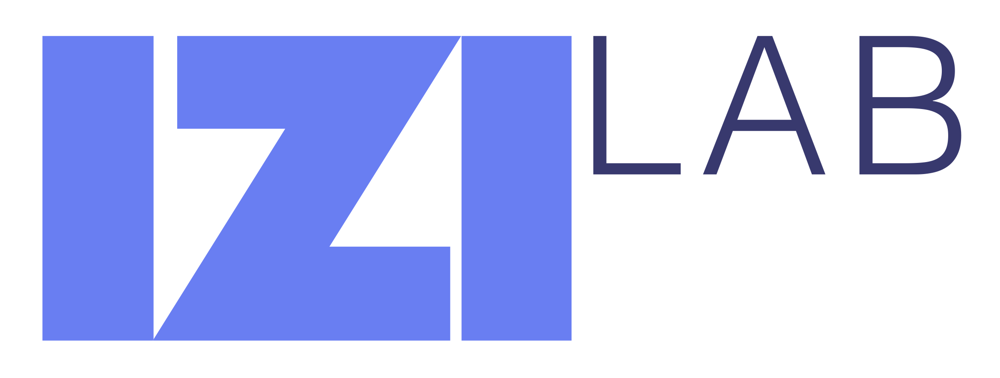
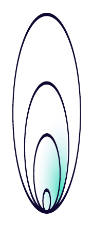
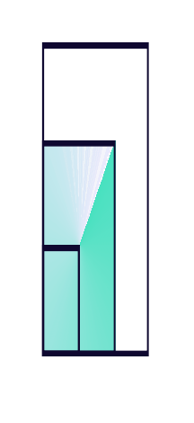
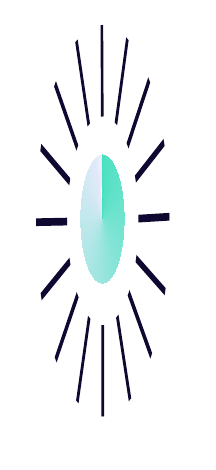

Guidiamo aziende e istituzioni attraverso l'incertezza del futuro con un approccio solido e basato sui dati.
Anticipare non significa prevedere: significa preparare le condizioni per scegliere meglio.
Una lettura sintetica dei segnali più rilevanti, dall'intelligenza artificiale alle smart cities, fino alla data science applicata al settore pubblico.


